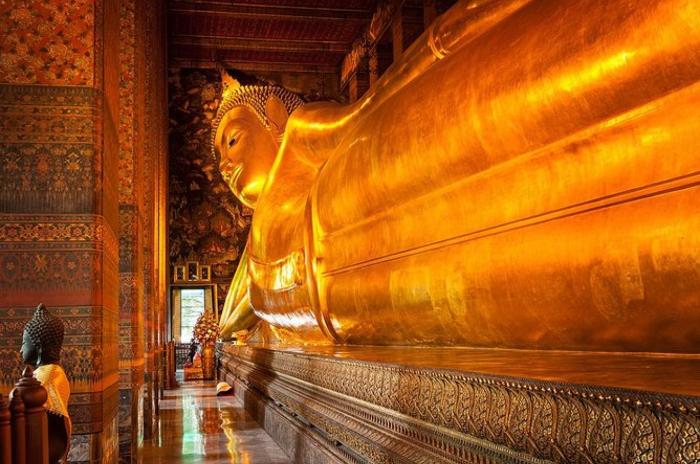
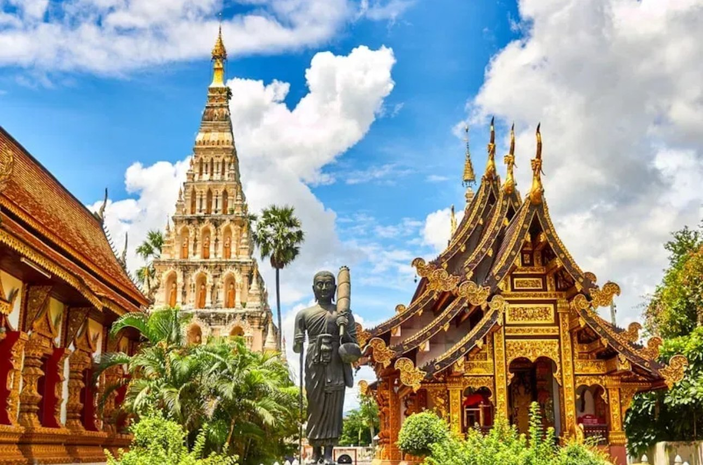
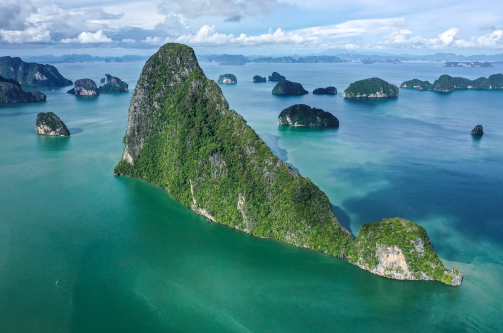

טיול מאורגן לתאילנד 🇹🇭
בנגקוק, פטאיה, צ׳יאנג ראי, צ׳יאנג מאי ופוקט, עם מדריך מלווה
💰 המחיר
כולל טיסות אל על ישירות, טיסות פנים בתאילנד, מלונות ברמה גבוהה עם ארוחת בוקר וכל הסיורים לפי התוכנית.
👤 המחיר הוא לנוסע שטס לבד. מחירי טיולים מאורגנים מחושבים לשני אנשים בחדר זוגי, ולכן נוסע יחיד משלם תוספת על חדר זוגי לבד. החדר כולו שלך לכל אורך הטיול, והמחיר כולל את כל מה שכתוב בדף.
🛡️ ביטול כרטיסי הטיסה ללא עלות במקרה של מלחמה
🧭 המסלול
✈️ הטיסות
תל אביב ← בנגקוק · אל על, טיסה ישירה · 11:10 שעות
בנגקוק ← תל אביב · אל על, טיסה ישירה · נחיתה 19.1
הנחיתה בבנגקוק ב־7.1 (שעון תאילנד מקדים ב־5 שעות את שעון ישראל). בתוך תאילנד: טיסות פנים לצ׳יאנג ראי, ומצ׳יאנג מאי לפוקט ולבנגקוק.
🏨 המלונות
12 לילות במלונות ברמה גבוהה לאורך כל המסלול, בחדר זוגי לבד, עם ארוחת בוקר בכל בוקר. שמות המלונות נשלחים מיד עם אישור יציאת הטיול.
🗺️ תוכנית הטיול, יום אחרי יום
✈️ המראה לבנגקוק עם אל על
נפגשים בנמל התעופה בן גוריון וממריאים ב־21:40 בטיסה ישירה של אל על לבנגקוק, בירת תאילנד.
🌺 בנגקוק: שוק הפרחים וקאו סאן
נחיתה בבנגקוק ב־13:50. נוסעים למלון לקבלת חדרים ומנוחה. בערב יוצאים לשוק הפרחים היפה של בנגקוק, וממשיכים לבילוי ברחוב קאו סאן המפורסם.
🛕 ארמון המלך, המקדשים ושייט על הנהר
מבקרים במקדש בודהה הזהב, שמשקלו חמישה וחצי טון, ובמקדש בודהה השוכב ״וואט פו״, החשוב בתאילנד. ממשיכים לארמון המלך המרשים ולגנים שלו, ולמקדש בודהה האזמרגד. אחר הצהריים יוצאים לשייט על נהר הצ׳או פראיה.


🛶 השוק הצף והגשר על נהר הקוואי
נוסעים לשוק הצף הגדול והססגוני, ובדרך מבקרים בחוות קוקוס. משם ממשיכים לקנצ׳נבורי: הגשר על נהר הקוואי, בית העלמין של חללי בעלות הברית ממלחמת העולם השנייה ומוזיאון המלחמה. חוזרים למלון בבנגקוק.

🌴 גני נונג נוץ׳ ופטאיה
נוסעים לפטאיה. מבקרים בגני נונג נוץ׳ העצומים, בחוות האורכידאות ובביתן הפרפרים, ורואים מופעים של תרבות תאילנד: חתונה מסורתית, אגרוף תאילנדי וריקודים. גולת הכותרת היא מופע הפילים הגדול בתאילנד. כולל ארוחת צהריים. בערב יוצאים לסיור בפטאיה המוארת.
✈️ טיסה לצ׳יאנג ראי שבצפון
חוזרים לשדה התעופה של בנגקוק וטסים לצ׳יאנג ראי, בצפון הרחוק של תאילנד. בערב סיור רגלי באזור המלון עם המדריך.
🏞️ משולש הזהב ושייט על המקונג
מתחילים בגני המלכה האם, מהגנים היפים בתאילנד. ממשיכים למשולש הזהב, נקודת המפגש של תאילנד, לאוס ובורמה, ויוצאים לשייט על נהר המקונג. בערב שוק הלילה של השבטים.
🏮 שבט ארוכות הצוואר וצ׳יאנג מאי
מבקרים בכפר שבט ארוכות הצוואר, ונוסעים לצ׳יאנג מאי, בירת הצפון. מבקרים במפעלי עבודות יד: כסף, עץ, משי ועור. בערב ארוחה ומופע פולקלור צפוני מסורתי (״קנטוק״).

🐘 רכיבה על פילים ודוי סוטפ
מבקרים בבית הספר לאילוף פילים, צופים במופע ורוכבים על פילים בתוך הג׳ונגל. ממשיכים לחוות סחלבים, ועולים ברכבל להר דוי סוטפ למקדש החשוב שבפסגתו, עם תצפית על כל צ׳יאנג מאי. בערב שוק הלילה המפורסם.
✈️ טיסה לפוקט
אחרי ארוחת הבוקר טסים לאי פוקט שבדרום, ומשם העברה למלון.
🏝️ שייט לאי של ג׳יימס בונד
יום טיול ושייט במפרץ פאנג נגה, שמורת טבע עם צוקי גיר ענקיים שיוצאים מהים, ומערות שנכנסים אליהן בקאנו. מבקרים באי של ג׳יימס בונד, שבו צולם הסרט ״האיש בעל אקדח הזהב״. כולל ארוחת צהריים. בערב סיור ברובע הבילויים פטונג.

☀️ יום חופשי בפוקט
יום חופשי ליהנות מהחופים, מהבריכה ומהקניות. למעוניינים יש סיורים לבחירה עם המדריך (בתוספת תשלום).
🏠 קניות אחרונות וטיסה הביתה
אחרי ארוחת הבוקר יש זמן לקניות אחרונות, ואז טסים מפוקט לבנגקוק. משם ממריאים ב־23:55 בטיסה ישירה של אל על, ונוחתים בתל אביב ב־19.1 בשעה 06:10.
התוכנית מתארת את האתרים שבהם מבקרים. סדר הביקורים או כיוון הנסיעה עשויים להשתנות.
✨ מה כלול
- ✅ טיסות אל על ישירות הלוך וחזור תל אביב – בנגקוק
- ✅ טיסות פנים בתאילנד לפי התוכנית
- ✅ 12 לילות במלונות ברמה גבוהה עם ארוחת בוקר
- ✅ כל הסיורים, ההעברות והביקורים לפי התוכנית
- ✅ ארוחות צהריים בנונג נוץ׳ ובשייט לאי של ג׳יימס בונד, וארוחת ערב עם מופע קנטוק
- ✅ ביטול כרטיסי הטיסה ללא עלות במקרה של מלחמה
- ✅ ליווי אישי שלנו מההזמנה ועד הנחיתה
🛂 חשוב לדעת לפני הטיסה
- כל הנכנסים לתאילנד, כולל ישראלים, צריכים למלא לפני ההגעה טופס דיגיטלי: Thailand Digital Arrival Card (TDAC), באתר tdac.immigration.go.th
- צריך עמוד ריק בדרכון.
- הדרכון חייב להיות בתוקף לפחות חצי שנה אחרי תאריך החזרה.
📋 תנאי ביטול
- מרגע ההזמנה ועד 30 ימי עבודה לפני היציאה: 20% דמי ביטול לאדם.
- מ־29 עד 14 ימי עבודה לפני היציאה: 50% דמי ביטול לאדם.
- מ־13 ימי עבודה ועד יום היציאה: 100% דמי ביטול לאדם.
- במקרה של מלחמה, ביטול כרטיסי הטיסה ללא עלות.
- הטיול מתקיים בכפוף למספר מינימלי של משתתפים. אם לא יתקיים, תוצע חלופה בתאריך אחר או החזר מלא.
ובינתיים, טיפ קטן מאיתנו 😉
המחירים משתנים כל הזמן, ומה שיש היום לא תמיד יהיה מחר.
שלח לנו צילום דרכון ונשריין לך את המקום כבר עכשיו, ככה המחיר הזה נשאר שלך 🙌
יאללה, תאילנד מחכה לך ✈️😄